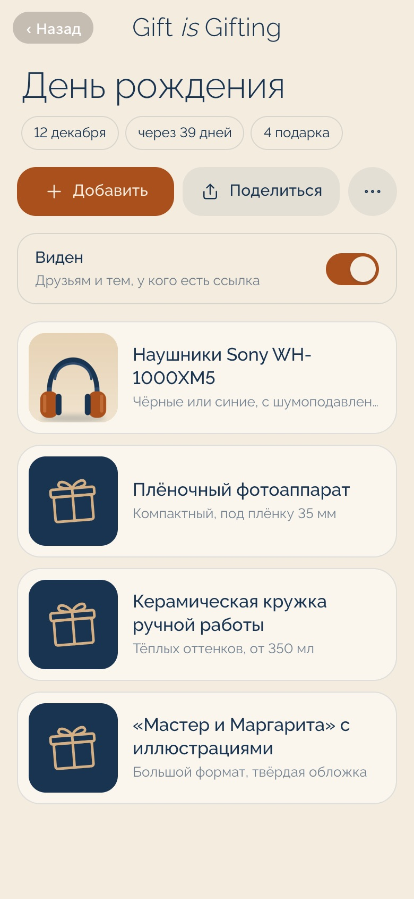
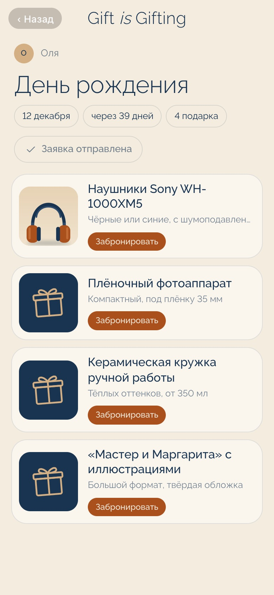
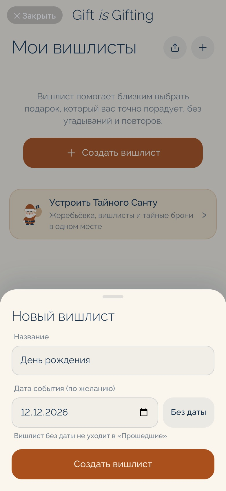
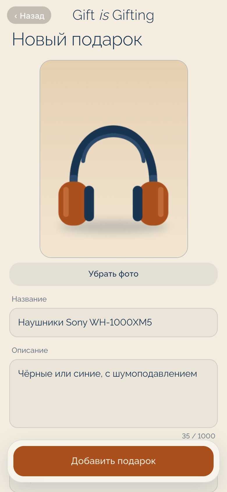
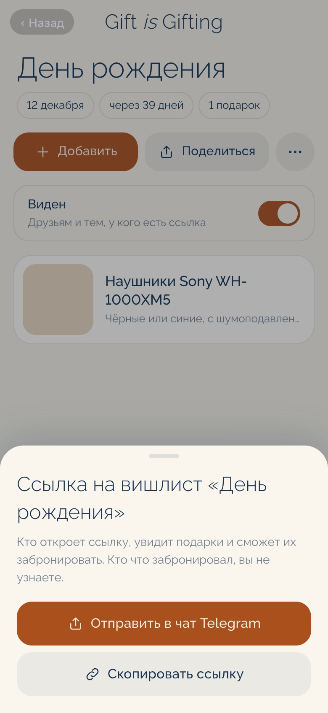
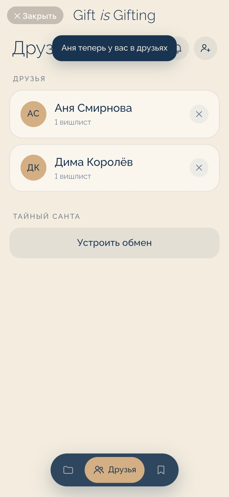
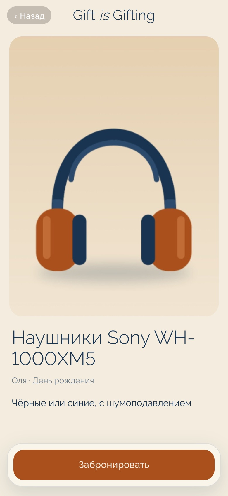
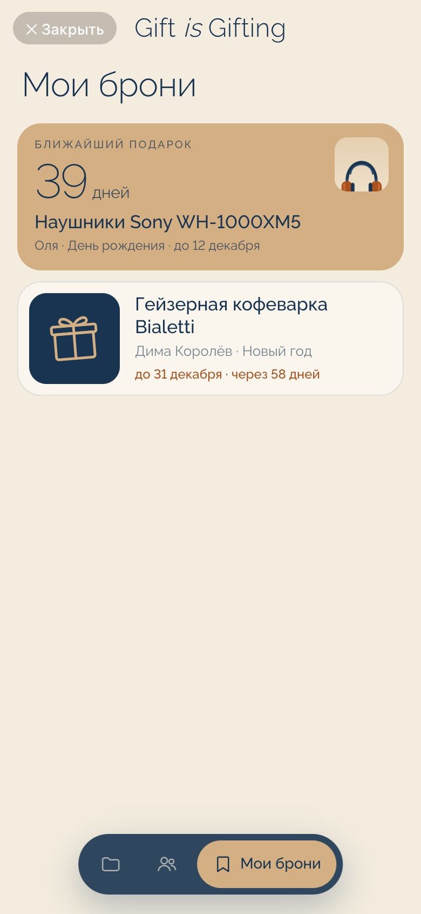
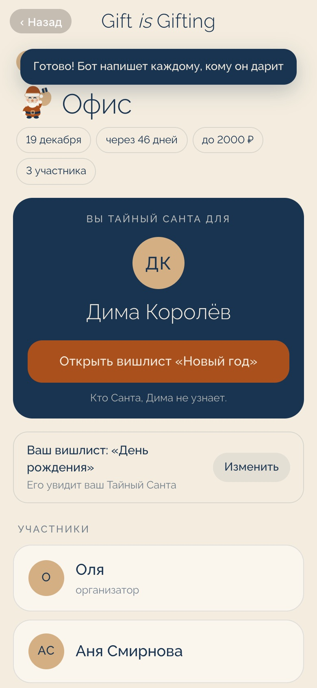

Создайте вишлист и поделитесь ссылкой. Друзья тайно бронируют подарки: они не повторяются, а вы не знаете, что вам подарят.


На день рождения, Новый год или просто так. Укажите дату, и все увидят, сколько дней осталось до праздника.

Фото, пару слов о том, какой именно нужен, и ссылку на магазин. Друзьям не придётся гадать.

Отправьте её в любой чат. Друзья откроют вишлист прямо в Telegram, ничего не скачивая.

Тогда новые вишлисты друг друга будут появляться сами, без ссылок. А бот напишет, когда друг создаст вишлист или добавит подарки.

Остальные видят, что подарок уже выбран, и берут другой. Так подарки не повторяются.

В вашем вишлисте нет ни одной подсказки, кто и что забронировал. Сюрприз остаётся сюрпризом до самого праздника.
Подарки, которые выбрали вы, собраны в одном месте с обратным отсчётом. Если друг изменит или удалит такой подарок, бот сразу напишет.

Приложение само проведёт жеребьёвку и никому не выдаст секрет.

Нет. Приложение открывается прямо в Telegram, имя и фото берутся из профиля.
Только те, кому вы отправили ссылку, и ваши друзья в приложении.
Да, в любой момент. Скрытый вишлист не видит никто, кроме вас, а когда вы вернёте его, брони друзей сохранятся.
Нет. Когда дата праздника прошла, бронировать подарки из этого вишлиста уже нельзя.
Это займёт пару минут
Открыть в Telegramили найдите в Telegram @gift_is_gifting_bot